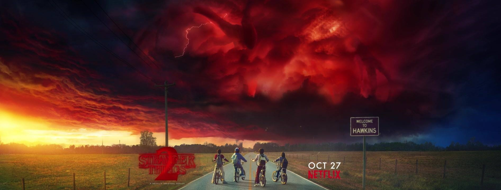
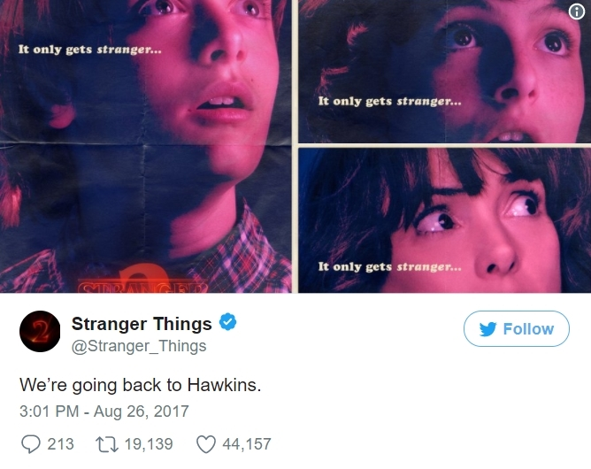
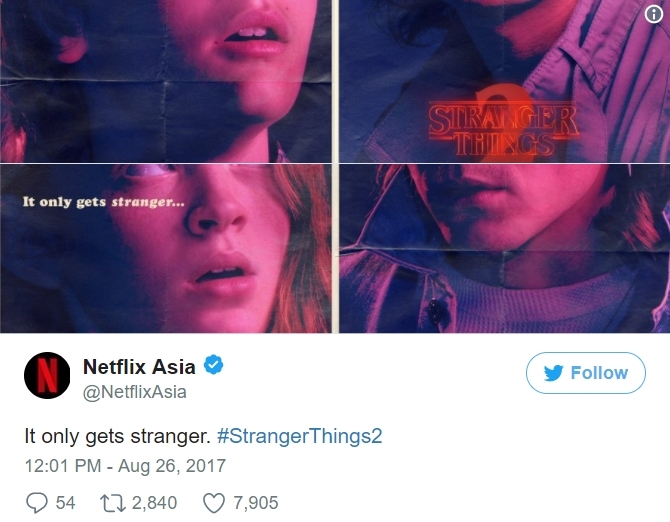

More "Stranger Things" To Come
9 OCT, BY PAUL BADER
Dear readers, we are excited to introduce you to the main recommendation of this month of our magazine, the second season of the much-anticipated horror-thriller series, “Stranger Things”, created by Matt & Ross Duffer in association with Netflix. As we remember, the first season finale concluded with the return of Will Byers and the heroic death (or what only seems to have been a death, according to the new trailer YAY!) of the supernatural character, Eleven. She sacrifices herself to defeat the dark force that was threatening to turn the small, quiet town of Hawkins upside down. Everything seems to have come to an end, until the last scene of the season debuts, in which a maggot monster crawls out of Will’s mouth. The citizens of the sleepy town have no idea that before the disappearance of the terrifying monster, new descendants were created or what awaits them in the year to come. Now, that all the main events of the last episode are fresh in our minds, let’s take a look on what we know so far about the most expected TV release of this month.
1. Cover
We have been introduced to the cover of the new season long before any other solid information was publicly announced, and it was everything we expected. A force even more evil and powerful has the little town as target and things are not going to stop getting stranger around there.

2. Posters
The official social media pages of both, Netflix and the series itself, have released a number of similar, 80’s-typical-looking theme we were introduced to since the beginning of the series, alongside the second season tagline “It only gets stranger…”. Besides the visual message, which expresses the feeling of unsettlement and fear, enhanced by the crimson light also seen on the season’s official cover; there were added a series of random descriptions. But at a closer look, there can be found some sort of connection, because placed together they create a short story: “We’re going back to Hawkins. A place where the curiosity door never closes. A place where new adventures await us. And it’s only getting stranger.”
 3. Brand new trailer
The official trailer gives us a little sneak peak of what is there to come in the new season:
- Eleven is back, but not really
- no one knows if she is coming back in our world or if she’s trapped in the other dimension, the monster came from;
- the chronological time advances and takes us to year 1984 – the time of the well-known “Ghostbuster” phenomena, which adds more tension to the creepy feeling already existing;
- although there is a time gap, Will does not seem to be really as before. The scene where he is tied up to a testing chair might be interpreted in different ways: either people find out about the whole monster story and think he suffers from sort of mental disorder or he could be in more trouble, since he was the host for the most-possibly new monster. OUCH!;
- the new monster is bigger, darker and even more terrifying.